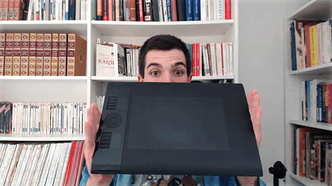

Game Art Quest Krita tutorial series for game artists
Krita tutorial for game artists (Free)
This training focuses on Krita’s functionality for game artists and digital painters. It covers the tools you need to work efficiently. It is completely free, thanks to the 424 Kickstarter backers.
Game Art Quest has a Facebook study group! There, we run weekly game art challenges. The goal is to become better game artists together.
There’s also an official Krita brush pack to supplement the training.
Volume 2 - Painterly game art and side-scrolling games

In this second training, we will take a closer look at the game creation pipeline from a game artist’s standpoint. We will create static assets for a side scrolling video game with a painterly art style, inspired by the work of VanillaWare (Odin Sphere, Muramasa) and Moon Studios (Ori and the Blind Forest).
Volume 3 - Cel shaded game art and isometric games

This 3rd volume is dedicated to isometric game art. In this series, we will expand on the first 2 volumes, explore new drawing techniques as well as the characteristics of isometric games.
Discover Game Art Quest!
Do you want to become a better 2d game artist?
You came to the right place! Using Krita, a free and open source painting application, Game Art Quest will show you both essential concepts and concrete techniques professionals use on a daily basis. It is a training series in 3 volumes. The first one is completely free.
In this series, I will run you through the process of creating professional grade static assets for games. I will share my workflow and my productivity tricks. Not only that! I will show you how Krita is becoming a solid option for professional work.
Although we’ll use Krita, the concepts you will learn apply to any painting application or medium. To become a more efficient game artist, you have to sharpen your observation skills and explore drawing techniques. These are the same regardless of the tools you are using, and that’s what we’re going to see.

The series will also cover the unique constraints we game artists face in our work. As a game artist, you have to make assets with a target resolution and camera in mind. You have to carefully draw your alpha masks. More importantly, as a game artist, your art has to support the gameplay: it shapes the game experience.
If you don’t know Krita yet, check out my 19 YouTube tutorials dedicated to it! And click here to download the application. It’s available on Windows, Linux and Mac (port in progress).
Game Art Quest was funded on Kickstarter by 424 generous backers!
This page is a hub for all of the activity linked to the project. Here, you will find open source game assets, the free Krita training, as well as a frequently updated roadmap.
Who am I to teach you game art?

I’m Nathan Lovato, a game designer. I the run GDquest a Youtube education channel dedicated to game art and game design. Every week, I release a new tutorial. I have made dozens of tutorials already! You can find them all on that page.
I’m working hand in hand with the Krita developers. They review my work to ensure that you get the best Krita training possible!
Open source assets
Space Adventures: 5 electro-futuristic game soundtrack

Space adventures by GDquest is licensed under a Creative Commons Attribution 4.0 International License.
Open Game Art
Game asset repository

More coming in the future! In the meantime, check out my existing assets on OpenGameArt.